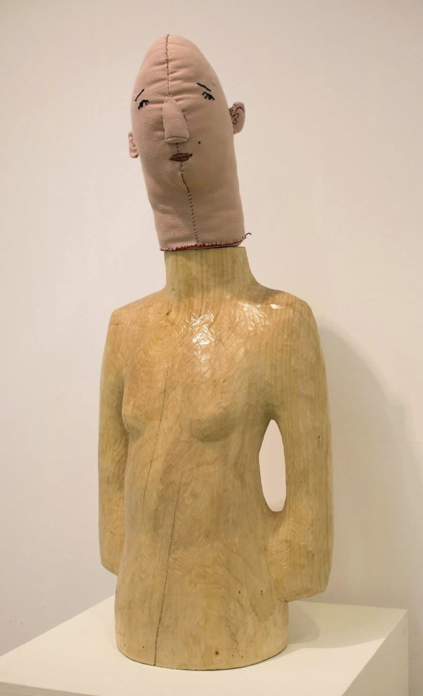
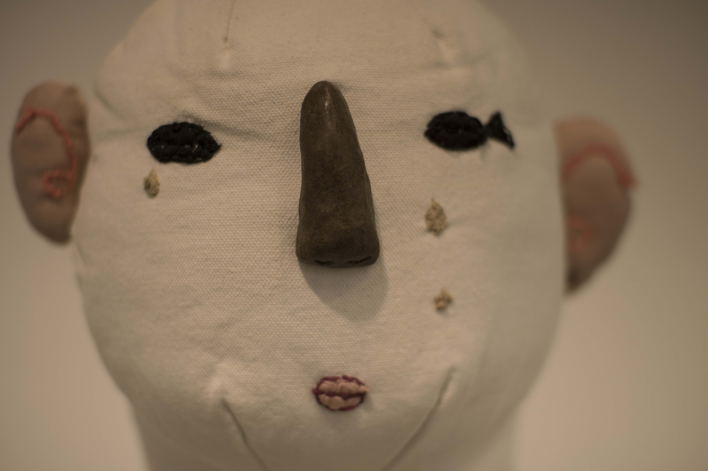
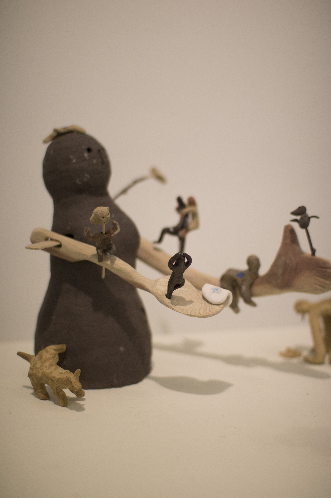
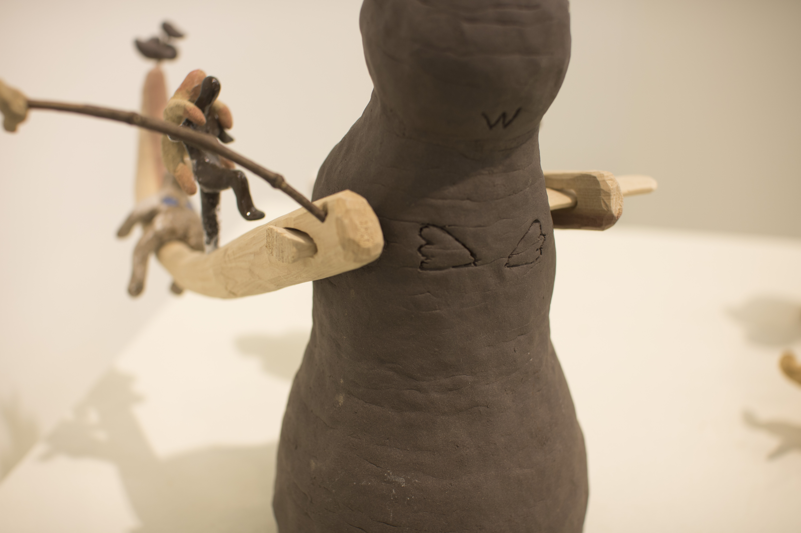
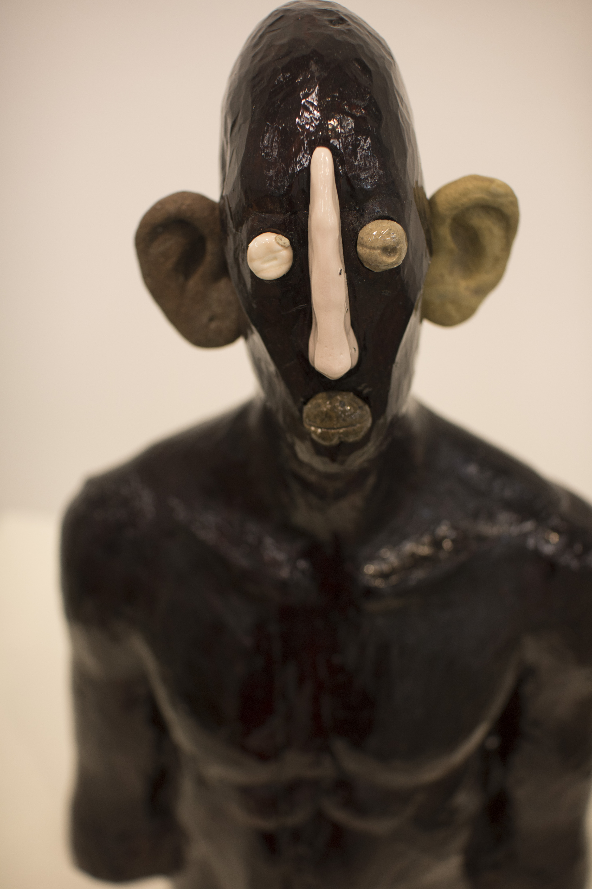
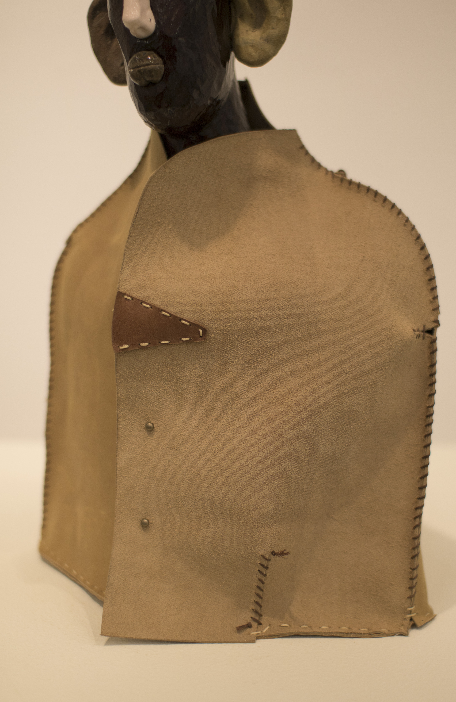

<가슴에 손을 얹은 사람_2019>

<가슴에 손을 얹은 사람>+<조각을 위한 보호대_2019>

<나무로 만든 두상_2020>

<꾸며진 좌대_2022>
+<천으로 만든 머리2_2020>">
<손잡이가 달린 몸통_2020>+<천으로 만든 머리2_2020>
 <천으로 만든 머리1_2020>(R), <천으로만든머리 2_2020>(L)
<천으로 만든 머리1_2020>(R), <천으로만든머리 2_2020>(L)
<천으로 만든 머리 2_2020>

<손잡이가 달린 몸통_2020>

<새얼굴을 한 토르소_2022>

<새얼굴을 한 토르소_2022>

<인물연구:나혜빈_2022>

<인물연구:최지수_2022>

<삼장법사의 두상_2022>+<조각을 위한 보호대_2022>

<천으로 만든 머리0을 위한 좌대_2019>

<천으로 만든 머리0_2019>
+<잔챙이 조각들>"
<팔이 긴 사람_2020>+<잔챙이 조각들_2020>
+<잔챙이 조각들>">
<팔이 긴 사람_2020>+<잔챙이 조각들_2020>

<노 젓는 여자_2016>

<오녀_2020> photo by김해영

<오녀_2020>
">
<좁은사람_2020>
">
<조각을 위한 보호대_2020>

<꾸며진 좌대_2022> photo by김해영

<천으로 만든 두상을 위한 보관대_2020>+<천으로 만든 두상2_2020> photo by김해영

<입을 틀어 막은 사람_2022> photo by김해영

말괄량이 길들이기 2022 전시 전경 photo by 김해영

<우는여자_2022> photo by 김해영
thank you, love you :) !